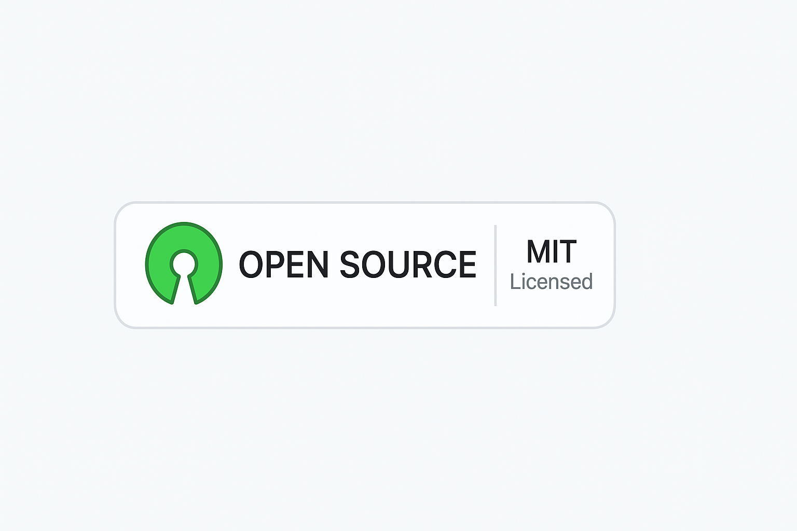

Tu Ancla para la Productividad
Lanzar Aplicación

Tu Ancla para la Productividad
Lanzar AplicaciónAgrupa tus tareas por prioridad y fecha con estilo y claridad.
Interfaz simple, optimizada para productividad diaria.
Feedback visual y auditivo al completar tareas.
Funciona directamente en tu navegador. Compatible con GitHub Pages.